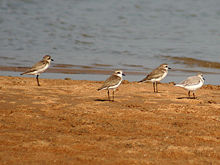
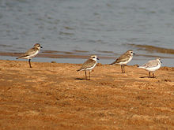

| Lesser Sand Plover | |
|---|---|
|  | |
| Lesser Sand Plovers with a Sanderling in Chilika, Orissa, India. | |
| Conservation status | |
| Binomial name | |
| Charadrius mongolus Pallas, 1776 |
|
| Subspecies | |
|
| Lesser Sand Plover | |
|---|---|
|  | |
| Lesser Sand Plovers with a Sanderling in Chilika, Orissa, India. | |
| Conservation status | |
| Binomial name | |
| Charadrius mongolus Pallas, 1776 |
|
| Subspecies | |
|
The Lesser Sand Plover, Charadrius mongolus, is a small wader in the plover family of birds. The spelling is commonly given as Lesser Sandplover, but the official British Ornithologists' Union spelling is Lesser Sand Plover.
There are five races, and the large east Asian forms, C. m. mongolus and C. m. stegmanni, are sometimes[2] given specific status as Mongolian Plover, Charadrius mongolus. If the taxonomic split is accepted, Lesser Sandplover as then defined becomes Charadrius atrifrons, including the three races atrifrons, pamirensis and schaeferi.
It breeds above the tree line in the Himalayas and discontinuously across to bare coastal plains in north-eastern Siberia, with the Mongolian Plover in the eastern part of the range; it has also bred in Alaska. It nests in a bare ground scrape, laying three eggs. This species is strongly migratory, wintering on sandy beaches in east Africa, south Asia and Australasia. It is a very rare vagrant in western Europe, but, surprisingly, of the three individuals recorded in Great Britain up to 2003, one was a Mongolian Plover.
This chunky plover is long-legged and long-billed. Breeding males have grey backs and white underparts. The breast, forehead and nape are chestnut, and there is a black eye mask. The female is duller, and winter and juvenile birds lack the chestnut, apart from a hint of rufous on the head. Legs are dark and the bill black.
In all plumages, this species is very similar to Greater Sand Plover, Charadrius leschenaultii. Separating the species may be straightforward in mixed wintering flocks on an Indian beach, where the difference in size and structure is obvious; it is another thing altogether to identify a lone vagrant to western Europe, where both species are very rare. The problem is compounded in that the Middle Eastern race of Greater Sandplover is the most similar to Lesser. Lesser usually has darker legs, a white forehead, and a more even white wing bar than greater.
The Lesser Sand Plover's food is insects, crustaceans and annelid worms, which are obtained by a run-and-pause technique, rather than the steady probing of some other wader groups. This species takes fewer steps and shorter pauses than the Greater Sand Plover when feeding.
The flight call is a hard trill.
The Lesser Sand Plover is one of the species to which the Agreement on the Conservation of African-Eurasian Migratory Waterbirds (AEWA) applies.

{kind=link}
{kind=link}